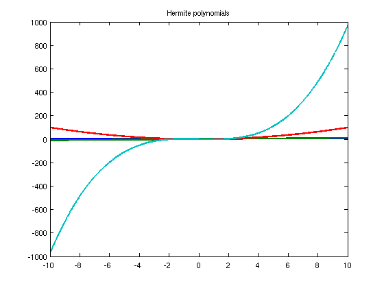
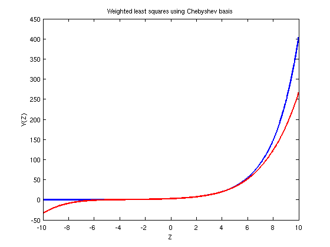
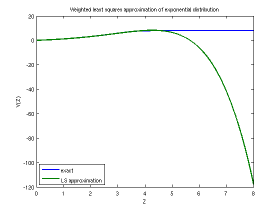
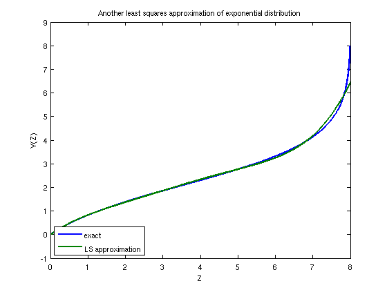

Generalized Polynomial Chaos
Toby Driscoll, 16th December 2011
Contents
(Chebfun example stats/GeneralizedPolynomialChaos.m)
gPC is a powerful way to express stochastic quantities with spectral accuracy. We demonstrate the technique in one dimension.
LW = 'linewidth'; FS = 'fontsize'; MS = 'markersize';
Strong approximation
When the density of a random variable Y is known explicitly, and can be reparameterized in terms of a standard random variable Z, then a polynomial approximation in Z can reproduce Y accurately. The gPC method expresses the approximation using orthogonal polynomials based on the density of Z, so that the approximation is a very simple least-squares (i.e., Fourier) projection.
For example, suppose Y is a lognormal variable (that is, log(Y) is normal with mean mu and variance sigma^2). If Z is a standard normal variable, then Y = exp(mu+sigma*Z). A standard gPC approximation will use Hermite polynomials in Z as a basis, as they are orthogonal when weighted by the Gaussian density of Z. Here, we build those using a three-term recurrence on a truncated domain. We are going to truncate the infinite domain to 10 standard deviations.
z = chebfun(@(z) z,[-10 10]); H = [ 1,z ]; N = 5; for n = 1:N-1 H(:,n+2) = z.*H(:,n+1) - n*H(:,n); end plot(H(:,1:4),LW,2), title('Hermite polynomials')
The plot shows that the polynomials are not uniformly normalized, but that won't be a problem. We can verify the orthogonality in a few cases:
rho = exp(-z.^2/2); rho = rho/sum(rho); % Gaussian density
sum( H(:,2).*H(:,5).*rho )
ans =
3.925302919896845e-13
sum( H(:,1).*H(:,3).*rho )
ans =
2.216109240560371e-15
To check things more globally, we can use the square root of the density rho to recast everything into the L2 norm.
w = exp(-z.^2/4); w = w/sqrt(sum(w.^2)); % square root of weight HW = repmat(w,[1 N+1]).*H; % multiply each column by w G = HW'*HW % Gram matrix of mutual inner products
G = 1.0e+02 * Columns 1 through 3 0.010000000000000 -0.000000000000000 0.000000000000000 -0.000000000000000 0.010000000000000 0.000000000000000 0.000000000000000 -0.000000000000000 0.020000000000000 -0.000000000000001 0.000000000000000 0.000000000000001 0.000000000000003 0.000000000000001 -0.000000000000002 0.000000000000036 -0.000000000000002 -0.000000000000018 Columns 4 through 6 -0.000000000000001 0.000000000000003 0.000000000000036 0.000000000000000 0.000000000000001 -0.000000000000002 0.000000000000001 -0.000000000000002 -0.000000000000018 0.059999999999999 -0.000000000000003 -0.000000000000010 -0.000000000000003 0.240000000000009 0.000000000000039 -0.000000000000010 0.000000000000039 1.200000000000125
The Gram matrix shows why it's so easy to use this basis for least-squares approximation. If we accept that G is numerically diagonal, then its inversion in the normal equations is trivial. Returning to our lognormal variable Y, its approximation has coefficients given by:
mu = 1; sigma = 0.5; y = exp(mu+sigma*z); rhs = (repmat(rho,[1 N+1]).*H)' * y; % inner products of y and H_n c = rhs ./ diag(G) % solve the normal equations
c = 3.080216848918044 1.540108424459042 0.385027106114899 0.064171184352773 0.008021398044998 0.000802139805236
The rapid decrease in the coefficients reflects the spectral accuracy. A plot shows how the weight function strongly emphasizes values of Z near 0 at the expense of the ends:
clf, plot([y,H*c],LW,2), title('Weighted least squares for lognormal density') xlabel('Z'), ylabel('Y(Z)')

In Chebfun, we can avoid all the discussion and use of orthogonal polynomials and go straight to the least-squares solution. We'll use the Chebyshev polynomials as the basis; though they aren't orthogonal in this inner product, they're (barely!) well-conditioned enough to do the job. The main trick is to again recast everything in the L2 norm, then use Chebfun's built in least-squares solutions.
T = chebpoly(0:N,[-10 10]); WT = repmat(w,[1 N+1]).*T; wy = w.*y; c = WT \ wy hold on, plot(T*c,'r',LW,2) title('Weighted least squares using Chebyshev basis')
c = 1.0e+02 * 0.496444324946645 1.058423471913505 0.569519261127982 0.391043154647867 0.100267475550692 0.050133737775374
Weak approximation
In practice, the more common situation is that the explicit parameterization Y(Z) is unknown, but the distribution FY(y)=P[Y<=y] is known. In this case, the trick is to reparameterize both Y and Z in terms of a variable in their common range [0,1]. Specifically, both FY(Y) and FZ(Z) are uniformly distributed and can be called a new variable U. Solving, we get Y=FY^(-1)( FZ(Z) ), a quantity that we can approximate as before.
For example, let Y be given by an exponential distribution on [0,inf], which we truncate for simplicity. All we would know, in principle, is the distribution FY(y) = 1-exp(-y), which Chebfun can invert.
FY = chebfun(@(y) 1-exp(-y),[0 8]);
Let's again use the Hermite weight in Z to approximate Y.
z = chebfun(@(z)z, [0 8] ); w = exp(-z.^2/4) / sqrt(sum(exp(-z.^2/2))); % sqrt of density FZ = cumsum( w.^2 ); % distribution of Z
Because function composition can be very sensitive to roundoff, we have to guarantee that the ranges of the distributions are exactly right.
FY = (FY-FY(0))/(FY(8)-FY(0)); FZ = (FZ-FZ(0))/(FZ(8)-FZ(0)); FYinv = inv2(FY); % invert y = FYinv(FZ); % compose
Now that we have an expression for Y as parameterized by Z, we can proceed as before with a least-squares approximation.
T = chebpoly(0:N,[0 8]); WT = repmat(w,[1 N+1]).*T; wy = w.*y; c = WT \ wy clf, plot([y,T*c],LW,2) title('Weighted least squares approximation of exponential distribution') xlabel('Z'), ylabel('Y(Z)') legend('exact','LS approximation','Location','southwest')
c = -20.625599957134142 -41.630340846337013 -33.422878071472525 -16.514675650572975 -4.746920822378029 -0.652282841706033
If we decide not to deemphasize the right end so much, we could use a weight function that is only inverse square rather than exponential.
w = 1./(1+z); % sqrt of density FZ = cumsum( w.^2 ); FZ = (FZ-FZ(0))/(FZ(8)-FZ(0)); % normalize exactly y = FYinv(FZ); WT = repmat(w,[1 N+1]).*T; wy = w.*y; c = WT \ wy clf, plot([y,T*c],LW,2) title('Another least squares approximation of exponential distribution') xlabel('Z'), ylabel('Y(Z)') legend('exact','LS approximation','Location','southwest')
c = 2.613340880098030 2.687973351259238 0.444143892171006 0.450397458926194 0.164817745106679 0.094370286996201
Note that both curves in the graph changed, because the parameterization and the approximation are both different.
References:
[1] D. Xiu, Numerical Methods for Stochastic Computations, Princeton University Press, 2010.